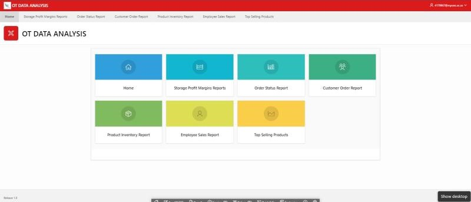

My Projects

DHT11 Sensor Data and Logging Analysis
-
This project involved developing a Python application to interface with the Raspberry Pi and DHT11 temperature and
humidity sensor.
-
This involved setting up necessary Python libraries, writing a script to capture real-time sensor
data, and displaying the results along with corresponding timestamps.
-
The solution was enhanced to log the recorded data into a CSV file for further analysis.



Live Demo

OT Data Analysis and Visualisation
Created a web-based application using Oracle SQL, PL/SQL, and APEX to query and visualize data
from the OT database.
Key responsibilities included importing database scripts, designing a dashboard with dynamic
reports and visualizations, and leveraging APEX’s visualization tools to produce insights.
The project aimed to enhance decision-making and improve operational efficiency for the
business.
Live Demo

Maternity and Postpartum Chatbot
This project required the development of a chatbot, created using Dialogflow that could help a
healthcare solution, the chosen focus is maternal health.
MaterniCare is here to help expectant mothers and new moms navigate their journey with
ease in terms of assessing danger signs, symptom severity, FAQ’s, meal/ exercise plans and
more.
Live Demo

ML Crops Vision System
Developed a ML vision system that differentiates between different crop types, radish and
lettuce. This involved collecting image data to use for training the model, validation and testing,
installing the necessary libraries (PyTorch) and using python for programming.
Created data preprocessing steps including image resizing and normalization to prepare the
dataset. Implemented a neural network model and trained it to classify the crops accurately.
I evaluated the model's performance, documented the methodology, and created a video
demonstration showing how the system works in practice.
I also considered ethical implications and real-world applications of the technology in agriculture.
Live Demo